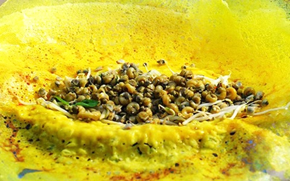

Nguyên Liệu:
- 200g bột gạo
- 100g bột năng
- 150g ốc gạo
- 100g tôm tươi
- 1 củ hành tím
- 1 quả trứng gà
- 1/2 thìa cà phê bột nghệ
- Gia vị: muối, tiêu, nước mắm, đường
- Rau sống: xà lách, rau thơm, giá đỗ
Cách Làm:
- Bước 1: Pha bột: Trộn bột gạo, bột năng, bột nghệ và nước vào tô, khuấy đều.
- Bước 2: Xào ốc gạo và tôm: Đun nóng chảo, xào ốc gạo và tôm với hành tím băm nhỏ.
- Bước 3: Đổ bột vào chảo, tráng đều mặt chảo và đậy nắp cho bánh chín vàng đều.
- Bước 4: Khi bánh chín, cho ốc, tôm lên trên bánh, gập lại và chiên thêm một lúc nữa.
- Bước 5: Dọn bánh xèo ra đĩa, ăn kèm với rau sống và nước mắm chua ngọt.
Video Hướng Dẫn: